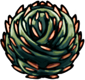

<app-nail (selectedEvent)="receiveSelectedNail($event)"></app-nail>
<!--<app-charm (selectedEvent)="receiveSelectedCharms($event)"></app-charm>-->

<!--<h2>Calculator</h2>-->
<!--<table>-->
  <!--<thead>-->
  <!--<tr >-->
    <!--<td>Nail basic attack</td>-->
    <!--<td>Cyclone Slash </td>-->
    <!--<td>Dash Slash </td>-->
    <!--<td>Great Slash </td>-->
    <!--<td>Thorns of Agony</td>-->
    <!--<td>Grubberfly's Elegy</td>-->
    <!--<td>Thorns of Agony</td>-->
    <!--<td>Thorns of Agony</td>-->
    <!--<td>Thorns of Agony</td>-->
    <!--<td>Thorns of Agony</td>-->
  <!--</tr>-->

  <!--</thead>-->
  <!--<tr >-->
    <!--<td>{{calculateBasicAttack()}}</td>-->
    <!--<td>{{calculateCycloneSlashMin()}} - {{calculateCycloneSlashMax()}}</td>-->
    <!--<td>{{calculateGreatOrDashSlash()}}</td>-->
    <!--<td>{{calculateGreatOrDashSlash()}}</td>-->
    <!--<td>{{calculateThornsOfAgony()}}</td> &lt;!&ndash;Thorn of agony, put a If the charm is selected&ndash;&gt;-->
    <!--<td>{{calculateGrubberflyElegy()}}</td> &lt;!&ndash;Thorn of agony, put a If the charm is selected&ndash;&gt;-->
    <!--<td>{{calculateThornsOfAgony()}}</td> &lt;!&ndash;Thorn of agony, put a If the charm is selected&ndash;&gt;-->
    <!--<td>{{calculateThornsOfAgony()}}</td> &lt;!&ndash;Thorn of agony, put a If the charm is selected&ndash;&gt;-->
    <!--<td>{{calculateThornsOfAgony()}}</td> &lt;!&ndash;Thorn of agony, put a If the charm is selected&ndash;&gt;-->
    <!--<td>{{calculateThornsOfAgony()}}</td> &lt;!&ndash;Thorn of agony, put a If the charm is selected&ndash;&gt;-->
  <!--</tr>-->
<!--</table>-->
